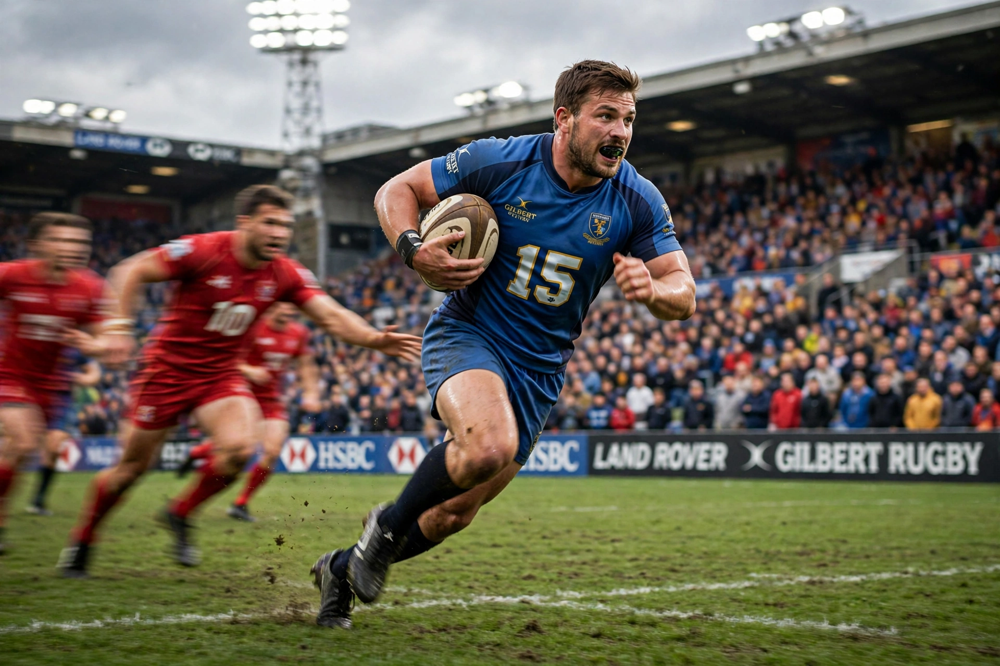

In rugby union and rugby league, a back is a player positioned behind the forwards, typically faster and more agile, responsible for attacking play, passing, kicking, and scoring tries. Backs wear numbers 9–15 in rugby union.

Backs contrast with the eight forwards, who contest scrums, lineouts and rucks. Famous backs include Jonah Lomu (wing), Dan Carter (fly-half), and Jonny Wilkinson (fly-half). In rugby league there are seven backs (numbers 1–7) among 13 players.
Rugby union positions · Forward
Recreated from memory.